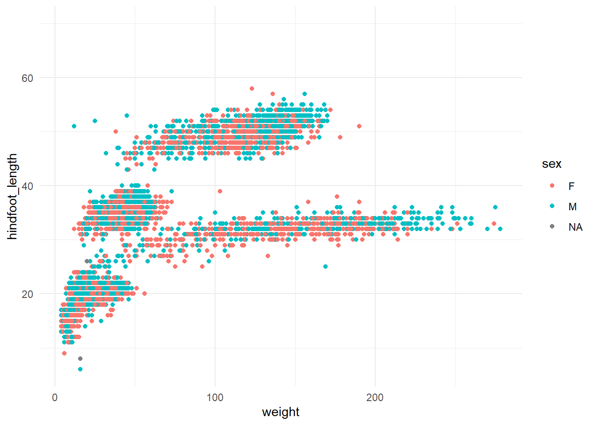

The following object is masked from 'package:purrr':
modify
The following objects are masked from 'package:stats':
embed, update
The following objects are masked from 'package:utils':
history, upgrade
The following objects are masked from 'package:base':
autoload, load, remove, use
Let’s take a common example of some data analysis and apply the above principles when writing the code.
First, let’s read in some data split into different files by month. Instead of naming each file, we can use readr::read_csv() to read them all in at once, bind them together into a single dataframe, and add a new column containing the filename of the data source.
files <-list.files(path ="data_raw", pattern ="\\.csv", full.names =TRUE)surveys <-read_csv(files, id ="source")
Rows: 16878 Columns: 14
── Column specification ────────────────────────────────────────────────────────
Delimiter: ","
chr (6): species_id, sex, genus, species, taxa, plot_type
dbl (7): record_id, month, day, year, plot_id, hindfoot_length, weight
ℹ Use `spec()` to retrieve the full column specification for this data.
ℹ Specify the column types or set `show_col_types = FALSE` to quiet this message.
This dataset comprises measurements taken from mammals captured in the Chihuahuan desert.
Let’s say we wanted to create a separate scatterplot for each species showing hindfoot length vs weight. Even if we’re only interested in species codes with at least 100 valid observations, that’s still 11 plots.
Rather than write out the same code 15 times, this is a good time to write our own function. If we encapsulate all the plotting steps in a function, we can then use {purrr} to apply the function over the species and create the plots.
# Create an example of a plotggplot(surveys, aes(x = weight, y = hindfoot_length, colour = sex)) +geom_point() +theme_minimal()
Warning: Removed 3081 rows containing missing values or values outside the scale range
(`geom_point()`).

plot_species <-function(data, x_var, y_var, colour, species) { filtered_data <- data |>filter(species_id == {{ species }}) plot_title <-paste0(y_var, " vs. ", x_var, " for Species ID: ", species) plot <- filtered_data |>ggplot(aes(x = .data[[x_var]], y = .data[[y_var]], colour = .data[[colour]])) +geom_point(alpha =0.6) +theme_minimal() save_path <-paste0("figures/", species, "_", x_var, "_vs_", y_var, ".png")ggsave(save_path, plot = plot, width =10, height =6, units ="in")}walk(valid_species, ~plot_species(data = surveys,x_var ="weight",y_var ="hindfoot_length",colour ="sex",species = .x ))
Warning: Removed 674 rows containing missing values or values outside the scale range
(`geom_point()`).
Warning: Removed 153 rows containing missing values or values outside the scale range
(`geom_point()`).
Warning: Removed 469 rows containing missing values or values outside the scale range
(`geom_point()`).
Warning: Removed 167 rows containing missing values or values outside the scale range
(`geom_point()`).
Warning: Removed 87 rows containing missing values or values outside the scale range
(`geom_point()`).
Warning: Removed 106 rows containing missing values or values outside the scale range
(`geom_point()`).
Warning: Removed 78 rows containing missing values or values outside the scale range
(`geom_point()`).
Warning: Removed 94 rows containing missing values or values outside the scale range
(`geom_point()`).
Warning: Removed 42 rows containing missing values or values outside the scale range
(`geom_point()`).
Warning: Removed 41 rows containing missing values or values outside the scale range
(`geom_point()`).
Warning: Removed 122 rows containing missing values or values outside the scale range
(`geom_point()`).